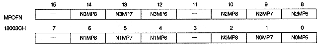
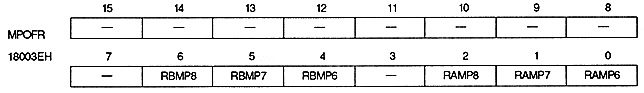

RAOVR1,RAOVR0 | 18003AH | bits 11,10 | For rotation parameter A |
RBOVR1, RBOVR0 | 18003AH | bit 15 , 14 | For rotation parameter B |
RxOVR1 | RxOVR0 | Screen over processing |
0 | 0 | Display area outside the display area Repeat image set to |
0 | 1 | The screen is out of the display area Repeat the character pattern specified in the pattern name register (only when the rotary scroll screen is in cell format) |
1 | 0 | Transparent outside the display area |
1 | 1 | Display area is set to plain size or bit Force 0 ≦ X <512, |


N0MP8 ~ N0MP6 | 18003CH | bits 2-0 | For NBG0 |
N1MP8 to N1MP6 | 18003CH | bit 6 ~ 4 | NBG1 |
N2MP8 to N2MP6 | 18003CH | bit 10 ~ 8 | NBG2 |
N3MP8 to N3MP6 | 18003CH | bit 14 ~ 12 | NBG3 |
RAMP8 to RAMP6 | 18003EH | bit 2 ~ 0 | For rotation parameter A |
RBMP8 to RBMP6 | 18003EH | bit 6 ~ 4 | For rotation parameter B |